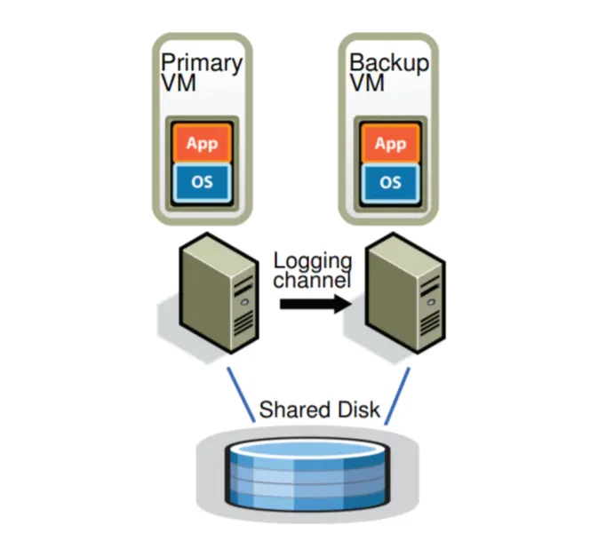
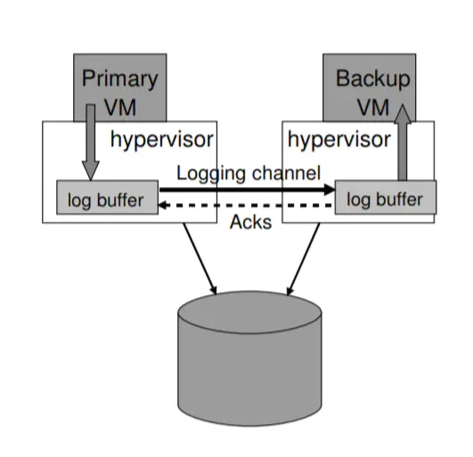
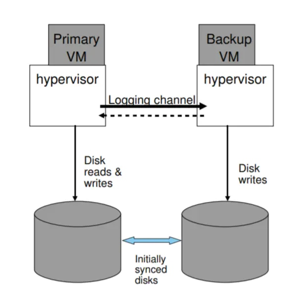

原文链接https://juejin.im/post/5d2030616fb9a07eea3292f1
本文是Fault-Tolerant VM论文的阅读笔记。本文实现了一个容错虚拟机，在另外一个服务器上备份主虚拟机的运行。可以有两种实现思路：
备份全部状态的变化到备份虚拟机（包括CPU、内存、I/O设备）。但是，这样一来需要传输处理的数据内容将十分巨大。
将虚拟机视为确定状态机，这是本文的方法。只需要初始状态和确定的输入，以及记录一些不确定事件即可完成备份。
VMware已经在vSphere中实现了本文的虚拟机备份机制，能够在主虚拟机发生故障之后无缝启用备份虚拟机。目前这个技术只支持单核处理器，因为多核处理器指令访存也是不确定的事件。当然，本文实现的备份机制奏效的前提是故障在被外部发现之前都能被检测到。
基础的容错设计
一个容错的配置如下图所示，对于一台虚拟机（主虚拟机）而言，我们在其他物理服务器上运行一台备份虚拟机，两台主机处于虚拟锁步状态。它们会连接到同一个共享磁盘。其中，所有的输入（包括网络、鼠标、键盘等等）只会交给主虚拟机，然后通过日志信道发送给备份虚拟机。

确定回放实现
复制虚拟机的运行主要面临三个挑战：
正确地捕获所有的输入和必要的不确定事件来保证备份虚拟机的确定运行，
正确地将输入和不确定性应用到备份虚拟机
保证不降低性能
不过，VMware vSphere已经提供了VMware确定回放[2]功能。
容错协议
输出要求：如果备份虚拟机在故障之后替代了主虚拟机，备份虚拟机运行期间要保证外界得到的输出是完全一致的。
复制代码
只有满足了输出要求，外界才不会观测到故障的发生，而这个要求需要延迟外部输出直到备份虚拟机收到足够的信息来重放输出操作。一个必要的条件就是备份虚拟机需要收到输出操作之前的所有日志。备份虚拟机不能在输出操作之前上线，因为可能主虚拟机中会存在不确定事件取消了后续的输出。
输出规则：主虚拟机不会将输出发送给外界，直到收到了来自备份虚拟机收到产生输出的操作的日志的确认。
复制代码
容错协议如下图所示，异步事件、输入和输出操作发送给了备份虚拟机，主虚拟机只有在备份虚拟机确认收到输出操作后输出。

不过协议无法保证重复输出，因为备份虚拟机无从知晓主虚拟机在输出之前还是之后崩溃，另外故障发生时发送给主虚拟机的包也会丢失。不过好在，网络基础设施、操作系统、应用程序通常都能处理丢包或者重复的情况。
故障检测和响应
在备份虚拟机取代主虚拟机之前，需要应用全部的日志。主虚拟机和备份虚拟机主要通过心跳包和日志通信来判断对方是否故障。为了解决脑裂问题，两个虚拟机需要通过共享磁盘上得知对方是否故障。如果主虚拟机故障，那么备份虚拟机取代主虚拟机，并创建一个新的备份虚拟机；如果备份虚拟机故障，那么创建一个新的备份虚拟机。
容错实现实践
启动和重启容错虚拟机
在启动主虚拟机或者备份虚拟机故障后，需要创建一个和主虚拟机相同状态的备份虚拟机，并且不能打断主虚拟机的运行。具体通过VMware VMotion实现，VMotion将虚拟机复制到另外一个物理服务器上，将源虚拟机作为主虚拟机，将目标虚拟机作为备份虚拟机。
备份虚拟机通常位于集群中另外一台服务器上，由vSphere调度选择放置的服务器，这些服务器能够访问共享的磁盘。
管理日志信道：
日志信道可以通过一个大的缓冲来实现，必要的时间可以控制主虚拟机的运行速度来保证备份虚拟机能够赶上。

容错虚拟机的操作
虚拟机会有各种各样的控制操作，例如关机、修改资源分配，这些其实都可以通过特殊的控制操作日志来实现。
容错机制给VMotion带来了挑战，VMotion用来无缝迁移虚拟机，要求在切换的时候挂起所有磁盘I/O。主虚拟机可以挂起磁盘I/O，但是备份虚拟机重复主虚拟机的，需要通过日志信道请求主虚拟机挂起磁盘I/O。
磁盘I/O实现中的问题：
实现磁盘I/O会面临以下问题
磁盘操作是非阻塞的，所以可以并行写入，但是由此引入了不确定性。解决方案是强制磁盘操作串行进行。
磁盘操作（DMA）和应用程序会并行操作同一块内存，引发数据竞争。解决方案是使用额外缓冲，读取磁盘时先将数据读入额外缓冲，写入磁盘时先将数据复制到额外缓冲。
当主虚拟机故障，备份虚拟机替代时，磁盘I/O可能没有完成。解决方案是重新执行磁盘操作，因为前两个方案已经避免了数据竞争，因此磁盘操作是可重入的。
网络I/O实现中的问题：
vSphere实现了一些网络方面的优化，例如直接从网络缓冲区取走数据，而不通过陷阱，但是这将带来不确定，因此需要禁用这个优化。另外也做了以下优化：
通过批量操作降低虚拟机陷阱和中断次数。
降低传输数据包的延迟：将发送操作和接收操作注册到TCP协议栈之中，保证立即发送和接收日志。
设计中的选择
是否共享磁盘
主虚拟机和备份虚拟机其实可以采用独立的磁盘，磁盘是内部存储，所以不需要满足输出要求，但是两个磁盘需要在启动容错之初进行同步。不过，这是脑裂问题就不能通过磁盘解决了，需要通过第三方协调服务器。

在备份虚拟机中执行磁盘读取操作
备份虚拟机也可以考虑直接从磁盘读取数据而不需要通过日志信道。但是这会导致备份虚拟机变慢，因为需要等待磁盘读取操作，并且需要处理读取故障，以及推迟写入操作保证之前的读取操作被备份服务器成功执行。